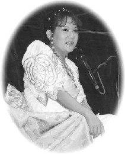

| Reportages spéciaux |
La récente retraite internationale de trois jours en Afrique du Sud s'était tenue dans un campement près d'une baie à quelques deux heures de route au Sud-Est de la ville du Cap. Les collines étaient verdoyantes, et quand le vent doux soufflait dans le camp, surtout lorsqu'on était en paisible méditation, l'on pouvait entendre à distance l'écho des vagues venant de l'océan.
Le premier jour de la retraite, durant la seconde session, Maître est arrivée dans la forêt où nous méditions, habillée d'un beau vêtement traditionnel africain blanc crémeux brodé d'or. D'une élégance particulière, Elle avait Elle-Même tressé Ses cheveux. Elle nous a rejoint tôt pour qu'en se réveillant de notre méditation, notre regard puissent savourer l'image d'une belle Sainte.
Maître a expliqué qu'avec tant de bois autour de nous, l'oxygène provenant des arbres pourraient revitaliser et raffiner nos peaux et nous pourrions vivre pour toujours avec ce corps physique. Elle a rappelé que Dieu avait fait ce corps très résistant afin qu'il puisse duré tout une éternité, cependant nous l'endommageons par des excès de travaux, en l'empoisonnant de produits toxiques ou d'activités non nécessaires, de même que nous épuisons notre mental par toutes sortes de projets et plans dénués de sens et de pensées négatives.
Maître a commenté ensuite comment la presse Sud Africaine a fourni un reportage positif au sujet de Son arrivée. Elle a plaisanté sur le fait qu'ils avaient dit qu'Elle était âgée de 51 ans, mais ce n'était qu'une faute d'impression qui aurait pu être lu comme 15 ! Si les gens vivent calmement dans l'harmonie comme l'exige les lois divines, ils peuvent vivre longtemps comme ceux des régions isolées de l'Himalayas, qui vivent 400 ans et même plus.
 Ensuite, Maître a raconté comment il y a bien longtemps, le monde était matriarcal plutôt que patriarcal comme aujourd'hui. Les femmes s'occupaient des affaires de l'état plutôt que les hommes. Aujourd'hui encore, cette tradition est maintenue au Tibet et chez les Zulus. Les époux assurent juste le rôle de multiplier la race, jusqu'à ce qu'ils apprennent de leurs sages épouses et gouvernent. Elle a réconforté ensuite les disciples hommes disant qu'Elle mentionnait par la, une observation objective de l'histoire, comment Dieu a muni à chaque sexe, différentes habiletés et avantages, ainsi donc, les hommes sont forts et protecteurs tandis que les femmes sont intelligentes, raffinées, délicates et peuvent bien se concentrer et endurer les épreuves les plus difficiles aussi bien au niveau spirituel qu'émotionnel. C'est pourquoi un vieux proverbe dit : «Derrière tout grand homme se cache toujours une grande femme.» Prenons chacun notre tour le rôle d'homme ou de femme, il n'est pas nécessaire d'être en compétition entre les deux genres. Il serait désavantageux que chaque sexe travaille sur leur faiblesse plutôt que sur leur force.
Maître nous a suggéré de penser à Dieu comme une mère déesse plutôt que le visage d'un père sévère qui puni et met en place des règles strictes. Elle a mentionné que l'âge d'or se réfère à une époque où les choses doivent être exécutées et obéies selon la manière que Dieu le souhaite. Les femmes sont d'une grande aide pour les hommes, de même que les hommes le sont pour les femmes. Nous ne devons pas changer les choses que Dieu a souhaitées, pour que nos vies puissent devenir un paradis.
La femme est plus patiente et c'est comme cela que Dieu l'a faite. De nos jours, nous utilisons nos faiblesses plutôt que nos forces au point que le monde s'est dégradé de l'âge d'or à l'état que nous expérimentons aujourd'hui. Maître a insisté que Dieu nous a laissé venir dans ce monde pour apprendre à devenir Dieu, à apprécier Dieu à nouveau, et que nous ne devrions pas utiliser la crainte pour contrôler les autres et de penser à Dieu comme un Dieu punisseur. De cette façon nous avons perdu la foi en un Dieu d'amour infini, et puisque Dieu est devenu une peur en soit alors en toutes nos actions, nous expérimentons la crainte et la culpabilité. Plus les gens ont peur, plus les pensées négatives s'assemblent, plus le diable est fort et possède plus de puissance, même si au début il n'existait pas. Il est ainsi plus difficile pour nous de retourner au paradis. Nous pouvons changer le futur, puisque nous possédons le libre arbitre. Le destin est une affaire du présent, nous pouvons encore le manoeuvrer pour que les choses arrivent autrement.
Dans l'après midi, durant la seconde session de méditation, Maître est arrivée dans une robe africaine d'un bleu éclatant, et a médité avec nous un certain temps. Elle nous rejoint ensuite le soir, habillée cette fois-ci d'une robe traditionnelle africaine rouge, noire et dorée lumineuse. Pendant un moment, Elle a répondu aux questions en groupe, c'est alors qu'une soeur de l'Ile Maurice dans l'océan indien a parlé de son expérience. Elle a raconté qu'avant de rencontrer Maître, une femme aux longs cheveux noirs lui était apparue en rêve disant : " Qu'attends tu ? Tu dois faire à ce que tu as a faire, tu traînes trop. " Elle a su que cette femme devrait être son Maître. Après qu'elle ait rencontré Maître, elle a eu beaucoup d'autres visions d'Elle.
Le matin du second jour de la retraite, Maître est arrivée dans la salle de la forêt, portant une robe traditionnelle africaine aux rayures bleu roi et blanches entrelacée de couleurs dorées. Maître avait de longues fines tresses dans un style vraiment africain, et portait un collier en perle bleu autour du front. Elle avait quelques plumes dans les tresses. Après avoir marché parmi les pratiquants pendant un moment et reçu un accueil bien chaleureux, Maître a médité avec nous. Plus tard ce jour-là, dans les bois près de la cuisine, Maître a rencontré l'équipe de travail de la tournée de conférences. Elle portait un bel habit blanc crème doté d'une légère broderie bleue aigue-marine. Ses longs cheveux flottants étaient ornées de magnifiques épingles en papillon. Elle nous a encouragés de travailler toujours avec un sourire amical et chaleureux plutôt que d'être gelé intérieurement. Elle a fait remarquer qu'un simple sourire peut nous prouver que nous sommes heureux. Sourire un certain temps nous permet d'oublier ce qui s'est passé avant. Même si notre travail est dur, nous devons toujours essayer de sourire.
Pendant cette session, plusieurs travailleurs ont fait part des merveilleuses expériences et évènements qui leurs sont arrivés lors de la tournée de conférences. Quelqu'un a mentionné avoir rencontré une personne sur un chemin spirituel différent, qui nous a remercié de notre présence dans sa ville, car il avait senti que l'atmosphère avait été tellement embellie pendant notre présence et que le niveau spirituel était plus stable. Maître a fait savoir que ceci était une belle confirmation de nos propres bénédictions spirituelles, particulièrement de quelqu'un de sensible et objectif qui n'avait rien à gagner de nous. Elle a affirmé qu'il est vrai que si nous pratiquons plus, nous deviendrons des saints. Une soeur de San José a confirmé qu'elle avait rencontré une indienne qui avait reçu un livret-échantillon de Maître il y a quatre ans et que Maître lui était apparue en rêve. Chaque fois que cette femme se trouvait en difficulté, elle n'avait qu'à regarder la photo de Maître sur le livret-échantillon et le problème était résolue. Toute sa famille et elle-même ont obtenu l'initiation pendant la tournée de conférences de Maître.
Une nuit magnifique a commencé avec l'arrivée de Maître dans la salle de méditation principale. Une fois de plus, Elle portait des vêtements traditionnel africains de couleur d'un bleu roi vif, assortie d'une veste à manches courtes. Sur Ses cheveux tressés, il y a avait de fines cordelettes de perles et des glands en peluches colorés. Elle portait aussi un magnifique collier d'un style africain. Elle marchait doucement sous une tonne d'applaudissements. Les initiés tendaient parfois les mains et même leur coeur à leur Bien Aimée, qui répondait gentiment. Maître ne pouvait s'empêcher de raconter des blagues et riait de tout coeur. Nous ne pouvions nous arrêter de rire, de sourire, d'applaudir ou de siffler. Nous partagions ainsi notre extase en présence de notre Maître unissant les gens de toutes les races, religions et de différentes cultures en une seule famille, la famille Guan Yin, tout un chacun regardant dans la même direction.
Un frère a demandé comment reconquérir la tranquillité du mental, et Maître a répondu de simplement pratiquer tout en se souvenant de ce que l'on a oublié, d'un coeur humble et sincère. Par un lavage de cerveau, tout ce qui est emmagasiner dans le mental prend du temps pour être effacé. Tout ceux qui demeurent encore attachés aux connaissances livresques doivent encore beaucoup travailler pour le progrès de l'âme, car le mental continue à commettre des erreurs et la vraie sagesse sera plus difficile à acquérir. Maître ajoute que tout ceci dépend de la foi que l'on accorde au Maître.
En réponse à une autre question, Maître a affirmé que toute chose est divisée en différentes dimensions en respectant le temps et l'espace pour que cela devienne une illusion physique. C'est la seule chose qui nous sépare de Dieu. Les choses ne peuvent pas nous arriver au même moment. Dans les dimensions plus élevées, les choses se passent simultanément sans interférer l'unes avec les autres. Par exemple, si deux personnes sont dans deux endroits différents et ont la nostalgie de l'une et de l'autre, dans les dimensions célestes par contre, elles peuvent choisir d'être ici et là-bas au même instant. Un vraie Maître est un Maître des deux mondes.
Le dernier jour de la retraite à la fin de la seconde session de méditation, Maître a fait Son apparition dans la salle de la forêt, vêtue d'une robe élégante d'un bleu aigue-marine et d'une écharpe en soie sur Son épaule droite. Dans Ses cheveux ondulés aux lumières scintillantes se trouvaient aussi un ruban aux paillettes argentées et des perles colorées entre lassaient Ses tresses. Elle marchait doucement près de la section des hommes, et un grand nombre de personnes La sifflait impressionné par Sa beauté.
Maître S'est ensuite rendue sur l'estrade où Elle a donné une conférence de clôture. Elle a apprécié notre groupe comme étant les personnes les plus belles et heureuses qu'Elle n'ait jamais vues. Elle a dit qu'Elle voulait remercié Dieu une fois de plus pour Lui avoir confié cette honorable mission et Lui permettre de connaître tant de personnes de différentes races. Elle nous a fait remarquer que notre grande joie provient du fait que nous regardons tous ensemble dans la même direction. Nous sommes capable de faire beaucoup de choses et nous pouvons même tout faire facilement parce que nous sommes directement connectés à Dieu. Ce jour-là, Maître était particulièrement heureuse d'être avec nous, disant que nous pouvons pour le moins, périodiquement bâtir un paradis sur Terre lors de nos retraites. Elle a remarqué que les retraites s'amélioraient et non seulement nous nous améliorons aussi, mais la population mondiale et la planète aussi.
Maître a discuté de la tenue d'une éventuelle retraite pour célébrer le nouveau millénaire de l'an 2000. Puis, pendant que la chanson «I will For Ever Love You» retentissait, Maître et les disciples bien que triste de se séparer, se sont dits au revoir. Après cette session, certains de nos chers initiés sont rentrés chez eux alors que d'autres sont restés quelques jours de plus au Cap pour assister au «Parlement des Religions du Monde» où Maître tiendrait un discours.